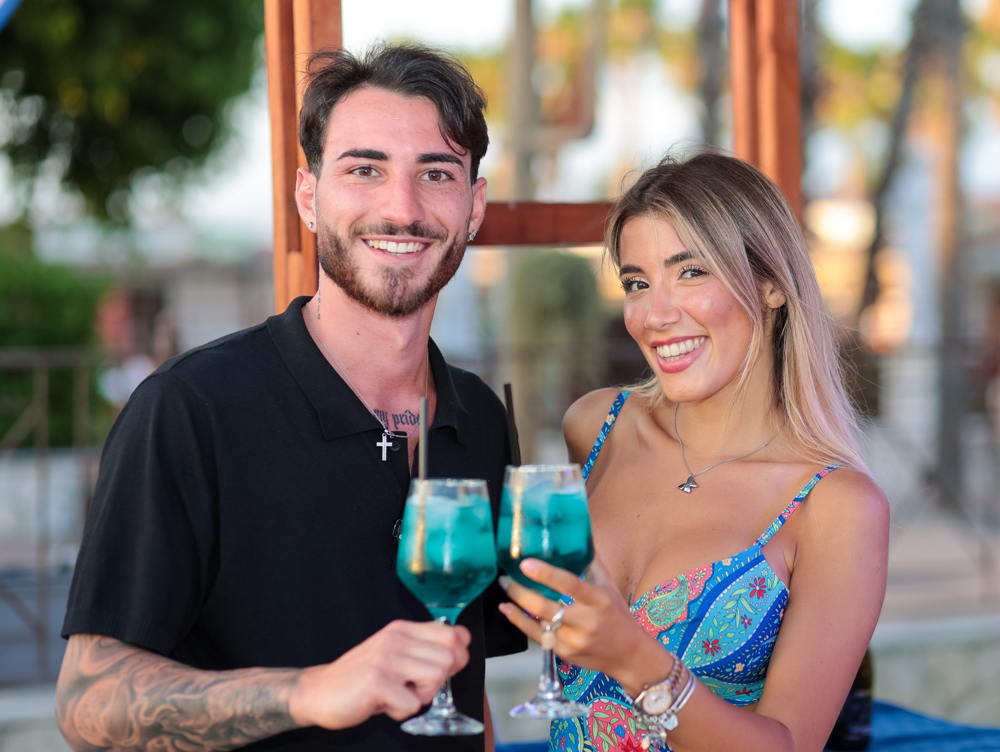

Ein Stück Neapel für Ihren Gastgarten.
Italienisches Lebensgefühl verkauft sich nicht über Worte.
Sondern über Erlebnisse.
Gäste suchen heute mehr als ein Getränk. Sie suchen Stimmung, Geschichte und einen Grund, noch eine Runde zu bestellen. Genau dort setzt unser Sortiment an: Es bringt mediterrane Leichtigkeit, visuelle Strahlkraft und einen sofort verständlichen Mehrwert auf die Karte.

Solange. Der blaue Bitter aus Neapel.
Solange ist ein alkoholischer Bitter mit 11 % vol. und der klaren Idee, die neapolitanische Aperitivo-Kultur modern zu interpretieren.
- Perfekt pur auf Eis mit Orangenzeste oder als markanter Bestandteil von Signature-Drinks.
- Im klassischen „Spaccanapoli“ trifft Solange auf Prosecco und Soda – frizzante, conviviale und sofort gastrotauglich.
- Der leuchtend blaue Auftritt ist ein echter Blickfang auf jeder Getränkekarte.
Von der IT zum Import italienischer Getränke.
Unser Unternehmen besteht seit 2014. Ursprünglich als IT-Dienstleister gegründet war schon damals klar: Wir wollen Dinge nicht aufblasen, sondern pragmatisch und mit echtem Mehrwert für unsere Kunden umsetzen. Durch persönliche Entwicklung, neue Wege und echte Begeisterung für italienische Genusskultur entstand Schritt für Schritt ein zweites, heute prägendes Standbein: der Import alkoholischer Getränke aus Italien nach Österreich.
Bringen wir italienischen Flair dorthin, wo Gäste gerne bleiben.
Ob Gastgarten, Rooftop, Bar oder Restaurant: Wenn Sie Ihren Betrieb mit einem charakterstarken Aperitivo-Angebot auf das nächste Level bringen möchten, freuen wir uns auf das Gespräch.
Un pezzo di Napoli per il vostro giardino.
Lo stile di vita italiano non si vende con le parole.
Si vende con l’esperienza.
Oggi gli ospiti cercano molto più di una bevanda. Cercano atmosfera, racconto e un motivo per ordinare un altro giro. È qui che entra in gioco il nostro assortimento: porta leggerezza mediterranea, forte impatto visivo e valore immediato in carta.
Solange. Il bitter azzurro di Napoli.
Solange è un bitter alcolico con 11% vol. e una missione precisa: reinterpretare in chiave contemporanea la cultura dell’aperitivo napoletano.
- Perfetto liscio con ghiaccio e scorza d’arancia oppure come ingrediente distintivo per cocktail signature.
- Nello “Spaccanapoli” incontra prosecco e soda in una ricetta frizzante, conviviale e subito adatta alla mescita.
- Il suo aspetto blu brillante attira davvero l'attenzione su qualsiasi lista delle bevande.
Dall'informatica all'importazione di bevande italiane.
La nostra azienda è stata fondata nel 2014. Nata inizialmente come fornitore di servizi IT, già allora era chiaro: non vogliamo gonfiare le cose, ma realizzarle in modo pragmatico e con un reale valore aggiunto per i nostri clienti. Grazie alla crescita personale, a nuovi percorsi e al vero entusiasmo per la cultura del gusto italiana è nato passo dopo passo un secondo pilastro, oggi determinante: l’importazione di bevande alcoliche.
Portiamo il fascino italiano dove gli ospiti vogliono restare.
Che si tratti di un giardino all'aperto, rooftop, bar o ristorante: se desiderate portare la vostra attività a un livello superiore con un'offerta di aperitivi di grande carattere, saremo lieti di incontrarvi per discuterne.